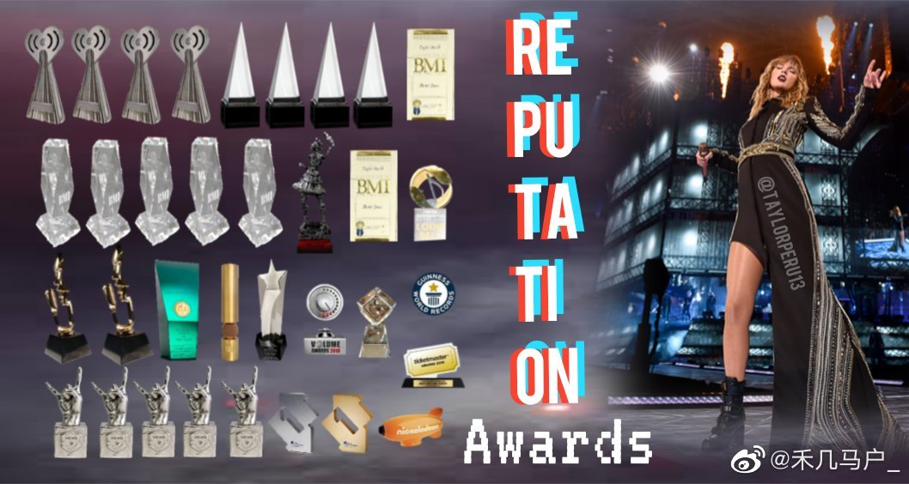
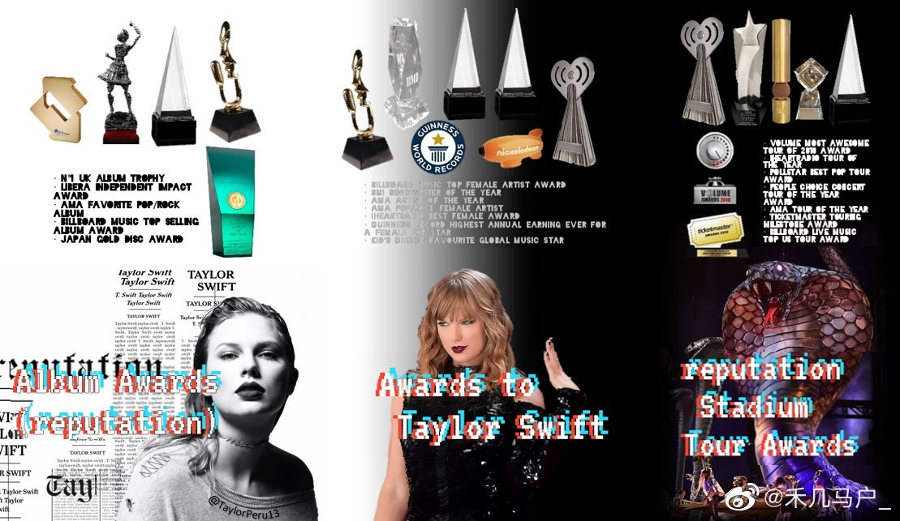

About Taylor Swift
Click here for more details
Taylor Swift is a famous singer-songwriter.
Taylor Swift is one of the best-selling music artists of all time, winning 10 Grammys and other awards and with a net worth of $360 million at 29 years old. The numbers don’t lie. Swift has been extremely successful. Her success gives her the power to impact the music industry.
 Photos of some of her Awards.
Her Life and career
What's your favourite one?
Why Taylor Swift Is So Influential
- Everyone knows Taylor Swift is an incredible artist. But what you may not know is that she's also an incredible role model for young people. Here are things she's done outside of the music industry that make her awesome.
1. Donated a portion of money from sales of her hit song "Welcome to New York" to the New York City public school system.
2. Has landed in the first place on DoSomething.org's "Celebs Gone Good" list three years in a row due to charity work.
3. Donated 6,000 books to a Pennsylvania library.
4. Turned a rehearsal into a benefit concert that raised over $750,000 for tornado victims across the southern states.
5. Donated $100,000 to the Red Cross in Cedar Rapids, Iowa to help the victims of the Iowa flood of 2008 and $500,000 Tennessee flood relief telethon in 2010.
6. Performed in BBC’s "Children in Need" concert and donated £13,000 for the cause.
7. Donated two signed guitars — one for a silent auction at a Wounded Warrior Project Benefit Dinner and another to PETA's 35th anniversary online auction.
8. Donated $50,000 to a young girl named Naomi Oakes, who had to miss one of Swift's concerts while undergoing treatment for Leukemia.